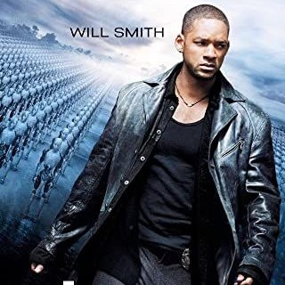
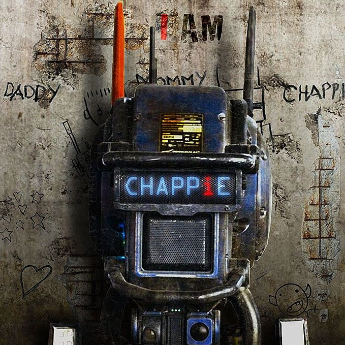
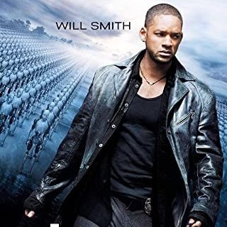
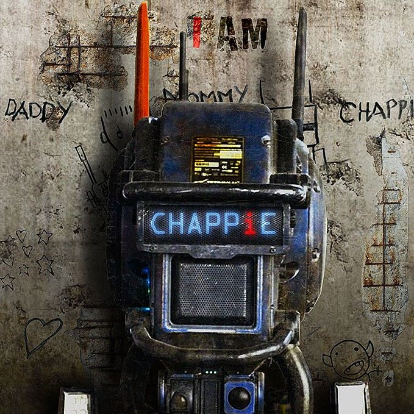

MY TOP 5 MOVIE PICKS
 




Real Steel
Charlie Kenton (Hugh Jackman) used to be a prizefighter
but lost his chance to win a title when heavy, towering robots
took over the boxing ring. Now working as a small-time promoter,
Charlie pieces together scrap metal into low-end fighters,
barely earning enough to make it from one underground venue to the next.
After hitting rock bottom, Charlie reluctantly teams with his estranged son,
Max (Dakota Goyo), to build and
train a championship robot for a last shot at redemption.
I, Robot
In 2035, highly intelligent robots fill public service positions throughout the world, operating under three rules to keep humans safe. Despite his dark history with robotics, Detective Del Spooner (Will Smith) investigates the alleged suicide of U.S. Robotics founder Alfred Lanning (James Cromwell) and believes that a human-like robot (Alan Tudyk) murdered him. With the help of a robot expert (Bridget Moynahan), Spooner discovers a conspiracy that may enslave the human race.
Chappie
In the near future, a mechanized police force patrols the streets and deals with lawbreakers -- but now, the people are fighting back. When one police droid is stolen and given new programming, he acquires the ability to feel and think for himself. While the robot, dubbed "Chappie (Sharlto Copley), " puzzles out human behavior, the authorities begin to see him as a danger to mankind and order; they will stop at nothing to ensure that Chappie is the last of his kind.
Cast Away
Obsessively punctual FedEx executive Chuck Noland (Tom Hanks)
is a route to an assignment in Malaysia when his plane crashes
over the Pacific Ocean during a storm. The sole survivor of the
flight, Chuck washes ashore on a deserted island. When his efforts
to sail away and contact help fail, Chuck learns how to survive on
the island, where he remains for years, accompanied by only his
handmade volleyball friend, Wilson.
How to train your dragon
A hapless young Viking who aspires to hunt dragons becomes the unlikely friend of a young dragon himself, and learns there may be more to the creatures than he assumed. Long ago up North on the Island of Berk, the young Viking, Hiccup, wants to join his town's fight against the dragons that continually raid their town.